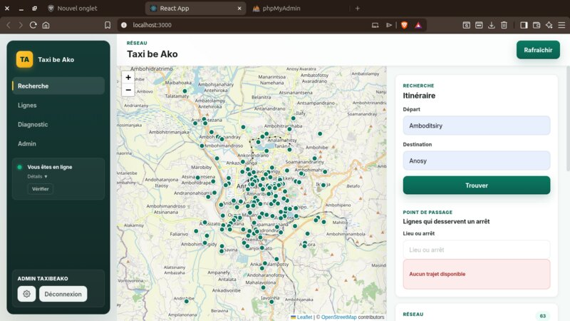
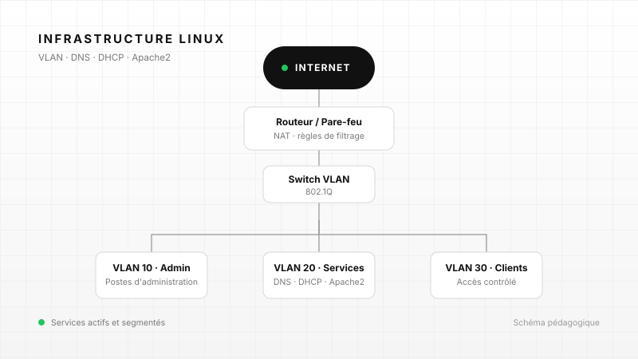
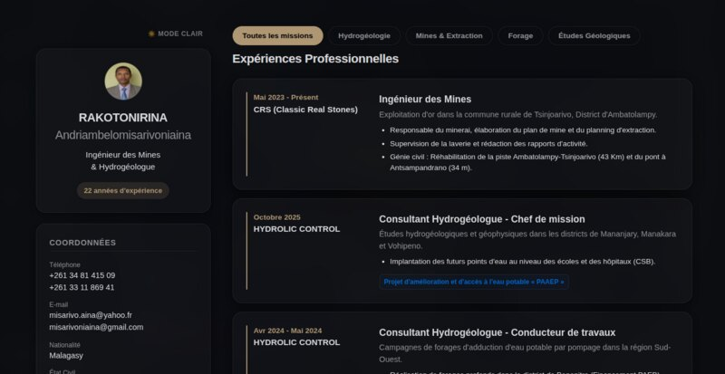
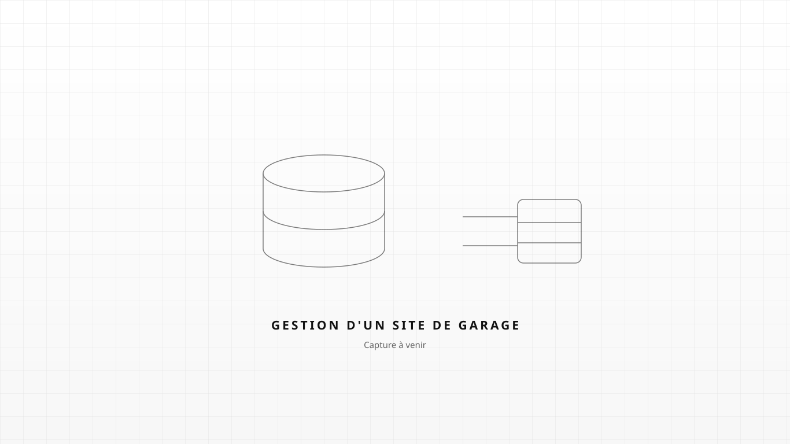

Art oratoire & leadership
Présidence de l'Association de Vie Étudiante (AVE) : gestion d'équipe, organisation de débats d'art oratoire et promotion de l'éloquence.
Disponible pour opportunités
Spécialisé dans la conception d'architectures réseau sécurisées, l'administration de serveurs Linux et le développement web moderne.
Passionné par le monde de la tech et bercé par l'univers des jeux vidéo, j'ai très tôt développé une curiosité pour la logique et le fonctionnement des systèmes. Doté d'une forte capacité d'adaptation et d'apprentissage rapide, j'aime relever des défis complexes, qu'il s'agisse de concevoir une infrastructure réseau résiliente ou de développer des solutions web intuitives.
Conception d'architectures réseaux, routage, administration d'OS et gestion de la sécurité informatique.
Fondations en développement logiciel, gestion de bases de données et architectures des systèmes d'information.
Une sélection de travaux combinant algorithmique complexe, infrastructures serveurs et ingénierie logicielle.

Plateforme Web & Mobile • Mobilité Urbaine
Solution numérique pour optimiser la mobilité à Antananarivo : centralisation des itinéraires, arrêts et calcul de correspondances pour la planification efficace des trajets.

DNS, DHCP, Apache2 & Linux Security
Déploiement d'une infrastructure réseau complète sous Linux : services DNS et DHCP, serveur web Apache2, ainsi que le durcissement du système et des services exposés.

UI/UX • HTML5, CSS3, JavaScript
Interface web statique et responsive, animée au défilement, sans framework ni dépendance externe. Pensée pour un chargement rapide sur mobile.

Full-Stack • Spring Boot & Thymeleaf
Application web de gestion d'un garage : véhicules, clients et rendez-vous centralisés, avec authentification et interface d'administration.
« Unir la stabilité des infrastructures réseaux à la souplesse du développement d'applications pour créer des écosystèmes durables. »
Déploiement et sécurisation des services fondamentaux (DNS, DHCP, routage dynamique, pare-feu).
Gestion des environnements virtuels et conteneurisés, automatisation Shell/Bash et optimisation d'OS.
Conception orientée objet, modélisation de bases de données relationnelles et API RESTful.
Rôles de leadership et découvertes du secteur des télécommunications et des services informatiques.
Présidence de l'Association de Vie Étudiante (AVE) : gestion d'équipe, organisation de débats d'art oratoire et promotion de l'éloquence.
Découverte immersive des réseaux de nouvelle génération, de la connectivité 5G et des enjeux de la transformation numérique.
Analyse pratique de l'alignement entre les besoins métiers et les infrastructures d'un grand groupe d'entreprises sur le domaine de la gestion de projet.
À la recherche d'un profil polyvalent en réseaux et développement ? Je suis joignable pour échanger sur vos opportunités.
Remplir le formulaire de contact →